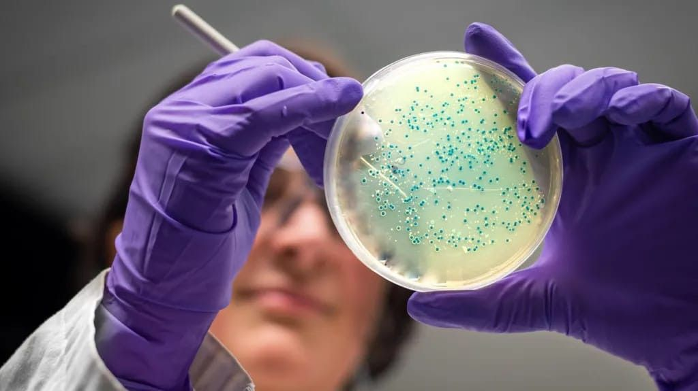

מדי שנה, יותר ממיליון בני אדם מתים מזיהומים עמידים לאנטיביוטיקה. במשך עשורים, פיתוח תרופות חדשות כמעט ועמד במקום. ועכשיו, דווקא אל
פורסם במקור ב LinkedIn
מדי שנה, יותר ממיליון בני אדם מתים מזיהומים עמידים לאנטיביוטיקה. במשך עשורים, פיתוח תרופות חדשות כמעט ועמד במקום. ועכשיו, דווקא אלגוריתם הוא זה שמספק את הפריצה.
במעבדות MIT, הבינה המלאכותית לא רק מסייעת לכתוב קוד או לשפר מצגות, אלא מהנדסת חיים, מולקולה אחר מולקולה.
שני חומרים אנטיביוטיים חדשים שפותחו על ידי מערכת בינה גנרטיבית הצליחו לחסל זנים עמידים במיוחד של זיבה ושל MRSA. הם לא נולדו בתרביות טבעיות ולא נשלפו ממסד נתונים אלא תוכננו מהיסוד, אטום אחר אטום, כתגובה ממוקדת לאיום חיידקי.
בפועל, מדובר בהנדסה מולקולרית בקצב מחשב: המערכת סרקה עשרות מיליוני תרכובות. רבות מהן כאלה שלא היו עוברות אפילו את שלב הרעיון במעבדות רגילות והציעה מועמדות עם פוטנציאל הרס חיידקי. חלקן עברו ניסויים מוצלחים בעכברים, ובקרוב ימשיכו לשלבים קליניים.
אבל מה שמרתק במיוחד הוא לא רק ההישג המדעי אלא המערכתיות החדשה שהוא מצביע עליה. אם בעבר פיתוח תרופה היה תהליך איטי, עתיר ניסוי וטעייה, יקר וחלקי, כעת האלגוריתם מסוגל להרחיב את גבולות הדמיון ולהביא את הדמיון הזה למציאות פרה־קלינית תוך שבועות.
זו לא אוטומציה של המדע, אלא שינוי באופן שבו מדע מתבצע.
ועדיין, יש גם פרדוקס: דווקא כשאפשר סוף סוף להמציא אנטיביוטיקות חדשות בקצב מואץ, התמריץ הכלכלי לפתח אותן נשאר נמוך. כי תרופה שנשמרת "למקרה חירום" ולא ניתנת בשגרה, לא מייצרת רווחים - גם אם היא מצילה חיים.
הקפיצה הטכנולוגית ברורה. הקפיצה המבנית עדיין נשארת אתגר ענק.
